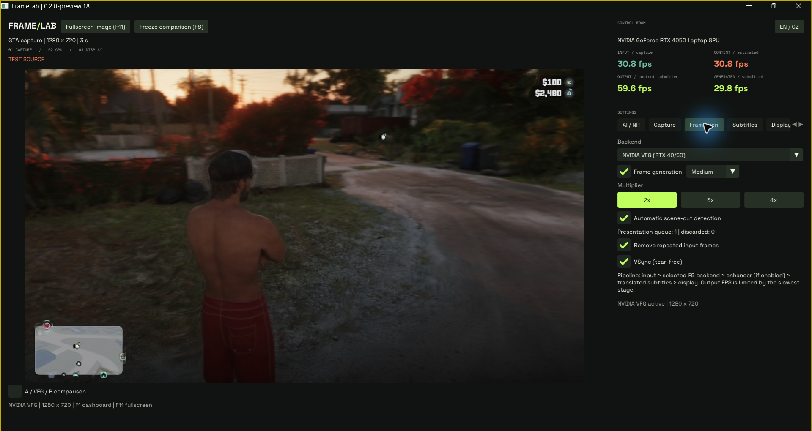

Does the picture look better?
Move the before/after divider. Watch motion. Inspect the artifacts, too.
Explore →FrameLab takes video from a game, window or capture card. Add generated frames, optional enhancement and translated subtitles — choose the features you need.
Free · portable ZIP · Czech and English UI · local models or your own API

Move the before/after divider. Watch motion. Inspect the artifacts, too.
Explore →132 new outputs across ten directions, including Czech ↔ Japanese.
Explore →FPS, latency, translation scores and memory. Always with the setup and method.
Explore →Capture card, game window, Remote Play or your own MP4/MKV.
RIFE / DirectML, Optical Flow or NVIDIA VFG. NR enhancement is a separate optional stage.
OCR reads text in the picture. A local model or your own paid API translates it.
Clean fullscreen, or just translated subtitles over the original game window.
Includes two sample videos, frame generation, OCR and a basic EN → CS CPU translator. Optional large models download in the app. External NR DLLs are not bundled.
Download preview.19 ↓GPU support depends on the feature. Enabling a switch does not give Intel or AMD NVIDIA NR support. Check compatibility and the tested hardware.
Compatibility & tested GPUs →No. FrameLab processes finished video. Experimental NR is not an official in-game DLSS 5 integration. Frame generation and enhancement are separate features.
It depends on the backend and driver. RIFE needs suitable DirectX 12 hardware; Optical Flow uses Direct3D 11. VFG is for RTX 40/50. See the results overview for physically tested setups and limits.
Local OCR and downloaded models can run offline. Optional OpenAI API access uses the internet and your own paid key.
A higher frame count alone does not speed up game input. Interpolation can add delay and artifacts. That is why we publish timing and failed frames too.
Find the source, releases and issue tracker on GitHub. When reporting a problem, include your GPU, backend, video source and steps to reproduce it.
GitHub Issues ↗